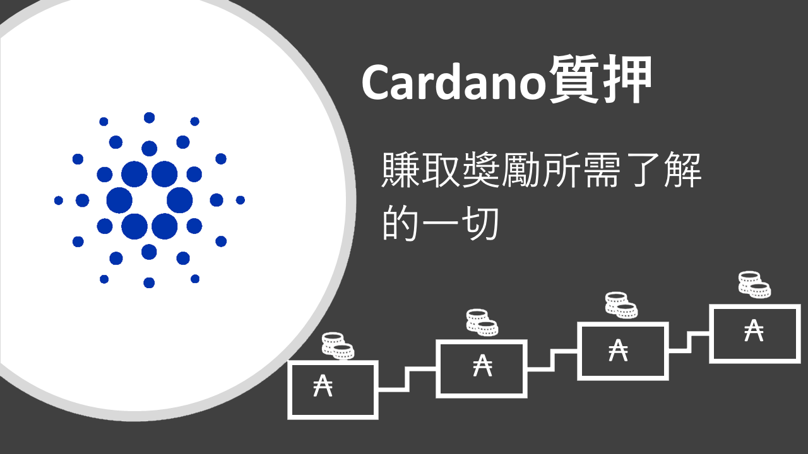

關於艾達幣(ADA)的質押問題
- 當您將艾達幣(ADA)投入權益池時，您同時也在支援區塊鏈的網絡，並可因此獲得收益
- 質押不會鎖住您的艾達幣(ADA)，因此您可以在任何時候隨意移動它。當您質押時，您是唯一有權限移動資金的人，因此艾達幣(ADA)仍是100％安全的在您手中。
- 您可以從10 艾達幣(ADA)以上開始質押。
- 您可以將您的艾達幣(ADA)放在Yoroi或Daedalus錢包進行質押。
- 回報率會因權益池而有所差異，多數權益池的平均收益是每年5％– 6％之間。
- 您在質押後的15到20天后才會開始收取第一筆收益，之後只要您所在的權益池有產生區塊，您就可每5天獲得一次收益。當您在錢包中增加新的資金時，您將得等待同樣的15 – 20天才能獲得新增的艾達幣(ADA)收益，然後在等待期間，您仍收取原始的收益。
- 質押時，您需要支付交易費用（約0.17 ADA）以建立並簽定您的質押密鑰。還有2艾達幣(ADA)保證金，當您停止質押時可以取回。
- 質押艾達幣(ADA)意味著僅參與區塊鏈網路驗證，因此，即使該質押池被駭客入侵或消失，您的資金仍然安全無疑，這時您可以重新委託另一個權益池。
- 您可以隨時更改權益池，通常是在權益池的艾達幣(ADA)質押量過大而產生飽和度，這時建議您更換其他權益池，以免收益下降。因此，建議您每隔一段時間檢查您權益池的統計資料，除非您想特意支持某權益池。